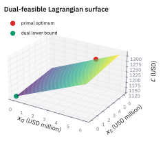

11.4 Constructing the Dual — Lagrangian Relaxation
แทนที่จะห้ามฝ่าข้อจำกัด ให้คิดค่าปรับต่อหน่วยที่ฝ่าแล้วปล่อยให้เลือกอิสระ ค่าปรับที่ทำให้ไม่มีใครอยากฝ่าคือตัวแปร dual
โต๊ะลด beta ตะกร้าหุ้น \$12 ล้านด้วยการ short QQQ (\$180 ต่อ \$1 ล้าน ลด beta 1.2 ต่อ \$1 ล้าน) และ SPY (\$90 ต่อ \$1 ล้าน ลด beta 1.0) ต้องลด dollar beta ให้ได้ 10.8 และแต่ละตัว short ได้ไม่เกิน \$6 ล้าน แผนที่ถูกที่สุดคือ QQQ \$4 ล้านกับ SPY \$6 ล้าน ราคา \$1,260 SPY ชนเพดานพอดี ฝ่ายสภาพคล่องเสนอว่า short SPY เกินเพดานได้ แต่ต้องจ่ายค่าปรับ $f$ ดอลลาร์ต่อทุก \$1 ล้านที่เกิน และยังต้องลด beta ครบเหมือนเดิม น้องในโต๊ะบอกว่าค่าปรับต้องอย่างน้อย \$90 เท่ากับต้นทุนซื้อขาย SPY โต๊ะจึงจะไม่อยากเกิน ค่าปรับต่ำสุดที่ทำให้โต๊ะไม่อยากเกินเพดานคือเท่าไร?
ลองตอบก่อนเปิดเฉลย
\$60 ไม่ใช่ \$90 SPY ที่เกินเพดาน \$1 ล้านลด beta ได้ 1 หน่วย ซึ่งถ้าใช้ QQQ แทนต้องจ่าย \$150 การใช้ SPY จึงประหยัด $150-90=\$60$ ต่อ \$1 ล้าน ถ้าค่าปรับต่ำกว่า \$60 เช่น \$50 โต๊ะจะเกินเพดานไปถึง \$10.8 ล้าน (เลิกใช้ QQQ) จ่ายค่าปรับ \$240 และต้นทุนรวม \$1,212 ต่ำกว่า \$1,260 ถ้าค่าปรับเกิน \$60 โต๊ะอยู่ที่เพดานเอง เลข 60 คือราคาเงาของเพดาน SPY ที่ได้จาก LP duality พอดี
ภาพรวมก่อนลงสูตร
มีสองวิธีบังคับให้คนเคารพกฎ วิธีแรกคือห้ามเด็ดขาด วิธีที่สองคือเปิดให้ฝ่าได้แต่คิดค่าปรับต่อหน่วยที่ฝ่า ถ้าค่าปรับต่ำไป คนจะฝ่า ถ้าสูงไป ก็ได้ผลแต่คิดแพงเกินจำเป็น ค่าปรับที่พอดีคือค่าที่ทำให้ “ฝ่า” กับ “ไม่ฝ่า” คุ้มเท่ากัน รูปด้านล่างแสดงโจทย์เปิด: ที่ค่าปรับ \$60 เส้นต้นทุนแบนพอดี
Lagrangian relaxation คือวิธีที่สองในรูปคณิตศาสตร์ ย้ายข้อจำกัดออกจากรายการ “ห้าม” เข้าไปในเป้าหมายโดยติดราคาต่อหน่วยที่ฝ่า (Lagrange multiplier) แล้วหาค่าต่ำสุดเหนือแผนที่เหลือแต่เงื่อนไขง่าย ๆ ทุกราคาที่ไม่ติดลบให้ขอบล่างหนึ่งค่า ราคาที่ให้ขอบล่างสูงที่สุดคือคำตอบของ dual และเงื่อนไขของ dual ทุกข้อโผล่ออกมาเองจากการขอให้ขอบล่างนั้นไม่ดิ่งเป็นลบอนันต์ ไม่ต้องจำกฎเครื่องหมายเลย
หน้านี้ทำกับการลด beta ก่อน เพราะรู้คำตอบอยู่แล้ว (\$1,260 ราคา 150 และ 60) ตามด้วย superhedge ที่ตัวแปรติดลบได้ แล้วตอบโจทย์ค่าปรับ จากนั้นใช้กับโจทย์ max คือการแบ่งทุนให้สามทีมภายใต้เพดาน VaR เพื่อดูภาพกระจก: ได้ขอบบนแทนขอบล่าง และตอบคำถามที่ทุกโต๊ะถามทุกปีว่าควรขอผ่อนเพดานข้อไหน
รูป — ต้นทุนรวมของโต๊ะเมื่อ short SPY เกินเพดาน ที่ค่าปรับสามระดับ
ศัพท์ที่ใช้ในหัวข้อนี้
- Residual
- ค่าที่บอกว่าแผนฝ่าข้อจำกัดไปเท่าไร เขียนให้ “ไม่เกินศูนย์” แปลว่าผ่าน ติดลบคือยังเหลือที่ว่าง เป็นบวกคือฝ่า ใช้เป็นตัวที่ถูกคิดราคา
- Lagrange multiplier
- ราคาต่อหนึ่งหน่วยของ residual ของข้อจำกัดข้อหนึ่ง ต้องไม่ติดลบสำหรับข้อ “ไม่เกิน” เพื่อให้การฝ่ามีต้นทุนเสมอ
- Lagrangian
- เป้าหมายเดิมบวกผลรวมของราคาคูณ residual ใช้รวมแผนกับราคาไว้ในสูตรเดียว สำหรับแผนที่ผ่านทุกกฎ มันไม่เกินต้นทุนจริงในโจทย์ min
- Lagrangian relaxation
- การย้ายข้อจำกัดบางข้อเข้าเป้าหมายผ่านราคา (dualize) แล้วทิ้งข้อจำกัดนั้นออกจากรายการห้าม (relax) แก้โจทย์ที่เหลือซึ่งง่ายกว่า ใช้สร้างขอบของคำตอบและสร้าง dual
- Dual function
- ค่าต่ำสุดของ Lagrangian เมื่อตรึงราคาแล้วเลือกแผนได้อิสระ ให้ขอบล่างหนึ่งค่าต่อราคาหนึ่งชุด dual คือการหาราคาที่ขอบนี้สูงที่สุด
- Gross notional
- ขนาดพอร์ตรวมโดยไม่หักล้างกัน ใช้คุมขนาดงบดุลของโต๊ะ
- ADV
- average daily volume จำนวนหุ้นที่ซื้อขายเฉลี่ยต่อวัน ใช้ตั้งเพดานการถือหุ้นให้ขายออกได้โดยไม่ทำให้ราคาพัง
สัญลักษณ์และหน่วย
| สัญลักษณ์ | ความหมาย | หน่วย |
|---|---|---|
| $g_B,\ g_Q,\ g_S$ | residual ของเกณฑ์ beta เพดาน QQQ และเพดาน SPY | beta คูณล้านดอลลาร์ และล้านดอลลาร์ |
| $\lambda=(y,\ u_Q,\ u_S)$ | ราคาของสาม residual | ดอลลาร์ต่อหน่วยของแต่ละแถว |
| $\mathcal L(x;\lambda)$ | Lagrangian ของแผน $x=(x_Q, x_S)$ ที่ราคา $\lambda$ | ดอลลาร์ |
| $c_0,\ k_Q,\ k_S$ | ส่วนคงที่ของ $\mathcal L$ และความชันหน้า $x_Q$, $x_S$ | ดอลลาร์ และดอลลาร์ต่อ \$1 ล้าน |
| $q(\lambda)$ | dual function (ขอบล่าง) | ดอลลาร์ |
| $f$ | ค่าปรับต่อ \$1 ล้านของ SPY ที่เกินเพดาน | ดอลลาร์ต่อ \$1 ล้าน |
| $x_1,\ x_2,\ x_3$ | ทุนที่แบ่งให้สามทีม | ล้านดอลลาร์ |
| $v=(v_1,\ v_2,\ v_3)$ | ราคาเงาของเพดาน VaR เพดาน gross และเพดานสภาพคล่องหุ้น A | กำไรต่อหน่วยของแต่ละเพดาน |
ขั้นที่ 1 — เขียนทุกข้อจำกัดเป็น “ส่วนที่ฝ่า” พร้อมหน่วย
จะคิดราคาให้การฝ่ากฎได้ ต้องวัดก่อนว่าฝ่าไปเท่าไร เขียนทุกข้อจำกัดของการลด beta ให้อยู่ในรูป “ค่าหนึ่งไม่เกินศูนย์” ค่านั้นคือ residual
$g_B$ คือ beta ที่ยังลดไม่ครบ หน่วย beta คูณล้านดอลลาร์ เป็นบวกเมื่อ hedge ไม่พอ $g_Q$ และ $g_S$ คือส่วนที่ short เกินเพดาน หน่วยล้านดอลลาร์ ที่แผน $(4,6)$ เกณฑ์ beta กับเพดาน SPY เป็นศูนย์พอดี ส่วนเพดาน QQQ ยังเหลือที่ว่าง 2
บรรทัดสุดท้ายคือการทดสอบเครื่องหมายที่ควรทำทุกครั้ง: แผนไม่ทำอะไรเลยฝ่าเกณฑ์ beta ชัด ๆ residual ของมันจึงต้องเป็นบวก ($g_B=10.8$) ถ้าออกมาติดลบ แปลว่าเขียนกลับด้าน
ขั้นที่ 2 — นิยาม Lagrangian: ต้นทุนบวกราคาของการฝ่า
นี่คือนิยาม ไม่ได้พิสูจน์มาจากอะไร: แทนที่จะห้ามฝ่า ให้คิดราคา $y$, $u_Q$, $u_S$ ต่อหนึ่งหน่วยของแต่ละ residual แล้วบวกเข้าไปในต้นทุน ราคาทุกตัวต้องไม่ติดลบ
ถ้าแผนฝ่ากฎ residual เป็นบวก Lagrangian คิดเงินเพิ่ม ถ้าแผนยังเหลือที่ว่าง residual ติดลบ Lagrangian คืนเงินให้ ราคาต้องไม่ติดลบ เพราะถ้าติดลบ การฝ่าจะกลายเป็นได้เงิน
สองบรรทัดล่างคือสมบัติที่ใช้ทั้งหน้า: แผนที่ผ่านทุกกฎมี residual ไม่เกินศูนย์ทุกตัว คูณด้วยราคาที่ไม่ติดลบแล้วได้ผลไม่เกินศูนย์ Lagrangian ของแผนที่ถูกกฎจึงไม่เกินต้นทุนจริง ไม่ว่าจะเลือกราคาอะไร
ถ้าข้อจำกัดเป็นสมการ เช่นงบของกองทุนที่ต้องรวมได้ 1 พอดี residual เป็นศูนย์ทุกแผนที่ถูกกฎ ราคาจะเป็นบวกหรือลบก็ไม่ทำให้สมบัติข้างบนพัง ราคาของสมการจึงติดลบได้
ขั้นที่ 3 — จัดกลุ่มใหม่: ส่วนคงที่กับความชันหน้าแต่ละตัวแปร
กระจายวงเล็บทั้งสามแล้วรวบพจน์ตามตัวแปรที่เราเลือกได้ ไม่มีคณิตศาสตร์ใหม่ แต่นี่คือขั้นที่ทำให้เห็นว่า dual มาจากไหน
ทุกพจน์ที่ไม่มี $x$ ไปรวมอยู่ใน $c_0$ ได้แก่ $10.8y$ จากเกณฑ์ beta กับ $-6u_Q$ และ $-6u_S$ จากเพดาน ส่วน $k_Q$ คือต้นทุนจริงของ QQQ \$180 หักด้วยมูลค่า beta ที่มันสร้าง $1.2y$ แล้วบวกค่าเพดานที่มันกิน $u_Q$ อ่านว่า “ต้นทุนสุทธิของการ short QQQ เพิ่ม \$1 ล้าน เมื่อทุกอย่างมีราคา”
ขั้นที่ 4 — dual function: ปล่อยแผนอิสระ แล้วดูว่าขอบล่างเหลือเท่าไร
ตอนนี้ตรึงราคาไว้ แล้วให้เลือกแผนได้อิสระโดยเหลือแค่ $x_Q, x_S\ge0$ (สามกฎถูกย้ายเข้าไปในราคาแล้ว) ค่าต่ำสุดที่ได้คือขอบล่างของต้นทุนจริง
ถ้าความชันทั้งสองไม่ติดลบ แผนที่ทำให้ $\mathcal L$ ต่ำสุดคือไม่ทำอะไรเลย $x=(0,0)$ จึงได้ $q=c_0$ ถ้าความชันตัวใดติดลบ เช่น $k_Q\lt0$ ดัน $x_Q=t$ ให้ใหญ่ขึ้นเรื่อย ๆ แล้ว $\mathcal L$ ดิ่งไม่มีพื้น ขอบล่างเป็นลบอนันต์ ใช้ไม่ได้
การขอให้ขอบล่างมีค่าจริงจึงบังคับ $k_Q\ge0$ และ $k_S\ge0$ คือ $1.2y-u_Q\le180$ และ $y-u_S\le90$ ตรงกับเงื่อนไขของ dual ที่ได้จากการถ่วงแถวทุกตัวอักษร โดยไม่ต้องจำกฎเครื่องหมายเลย บรรทัดสุดท้ายรวมสมบัติ $\mathcal L\le C$ ของแผนที่ถูกกฎ: ขอบล่างนี้ใช้ได้กับราคาไม่ติดลบทุกชุด
รูป — ทำไมตัวแปรห้ามติดลบได้อสมการ แต่ตัวแปรอิสระได้สมการ
ขั้นที่ 5 — ตัวแปรที่ติดลบได้: dual ของ superhedge ออกมาเป็นสมการเอง
ทำสูตรเดียวกันกับ superhedge ของภาระ \$120/\$90/\$50 ซึ่ง $\theta$ ติดลบได้ residual คือ $X-S\theta\le0$ ราคาคือ $u\ge0$ หนึ่งตัวต่อหนึ่งสภาวะ แล้วเขียนเป็นสายอสมการทีละขั้น
“$\ge$” ตัวแรกมาจากการหักของที่ไม่ติดลบ: แผนที่ผ่านกฎมี $S\theta-X\ge0$ คูณ $u\ge0$ ได้ค่าไม่ติดลบ หักออกแล้วต้นทุนลดหรือเท่าเดิม ขั้นนี้คือการ dualize: ติดราคาให้ข้อจำกัด
“$\ge$” ตัวที่สองมาจากการทิ้งข้อจำกัด $S\theta\ge X$ ไปเลย หาค่าต่ำสุดเหนือ $\theta$ ทุกค่า ยิ่งมีทางเลือกมาก ค่าต่ำสุดยิ่งต่ำได้ ขั้นนี้คือ relax: ผ่อนข้อจำกัดออกจากรายการห้าม แล้วจัดกลุ่มใหม่ได้ส่วนคงที่ $X^{\mathsf T}u$ กับความชัน $p-S^{\mathsf T}u$
เพราะ $\theta$ ติดลบได้ ความชันตัวไหนไม่เป็นศูนย์ก็ดัน $\theta$ ไปทางที่ $\mathcal L$ ลดได้ไม่สิ้นสุด ตามแผงขวาของรูปข้างบน ขอบล่างจะมีค่าจริงก็ต่อเมื่อ $S^{\mathsf T}u=p$ พอดี ซึ่งคือ dual “ราคาสภาวะต้องให้ราคาหุ้นและพันธบัตรถูก” ที่ได้จากการถ่วงแถว ขอบล่างที่ดีที่สุดคือ $\max X^{\mathsf T}u$ ภายใต้ $S^{\mathsf T}u=p$ และ $u\ge0$ ได้ \$90.50 ที่ $u=(\tfrac16, \tfrac{47}{60}, 0)$
ขั้นที่ 6 — ลองราคาที่ใช้ได้แต่ยังไม่ดีที่สุด
โจทย์ให้อะไรมาบ้าง: กลับมาที่การลด beta ใช้ราคา $\lambda_0=(130, 0, 45)$ แทนลงในส่วนคงที่และความชันที่จัดกลุ่มไว้
คำตอบ: ความชันทั้งสองเป็นบวก ขอบล่างจึงเป็น \$1,134 ใช้ได้จริงแต่ห่างต้นทุนจริง \$126 ระนาบ Lagrangian แตะต้นทุนจริงที่แผน $(4,6)$ พอดี เพราะที่แผนนั้นแถวที่มีราคาบวก (beta และ SPY) มี residual เป็นศูนย์ และแถวที่ยังเหลือที่ว่าง (QQQ) มีราคาศูนย์
ตรวจเองใน 10 วินาที: ที่ $y=130$ ราคาเพดาน SPY ต่ำสุดที่ยังใช้ได้คือ $130-90=40$ ไม่ใช่ 45 ถ้าใช้ 40 ความชัน $k_S$ เป็นศูนย์และขอบล่างเป็น $1{,}404-240=1{,}164$ ดีกว่า $\lambda_0$ อยู่ \$30 ราคาเพดานยิ่งต่ำยิ่งดี เพราะแต่ละหน่วยหัก 6 ออกจาก $c_0$
รูป — ระนาบ Lagrangian ที่ราคา (130, 0, 45)

ขั้นที่ 7 — หาราคาที่ขอบล่างสูงที่สุด
ราคาเพดานแต่ละหน่วยหัก 6 ออกจาก $c_0$ จึงควรต่ำที่สุดเท่าที่ความชันยอม สำหรับราคา beta $y$ แต่ละค่า ใช้ราคาเพดานต่ำสุดแล้วเขียน $q$ เป็นฟังก์ชันของ $y$ ตัวเดียว
ช่วงแรกยังไม่ต้องใช้ราคาเพดาน $q$ ขึ้น 10.8 ต่อหนึ่งหน่วยของ $y$ พอเกิน 90 ความชันของ SPY จะติดลบถ้าไม่เพิ่ม $u_S$ ตาม ทุกหน่วยของ $y$ จึงต้องจ่าย $u_S$ อีกหนึ่งหน่วย ความชันของ $q$ เหลือ $10.8-6=4.8$
พอเกิน 150 ต้องเพิ่ม $u_Q$ อีก 1.2 ต่อหน่วย ความชันกลายเป็น $4.8-7.2=-2.4$ จุดสูงสุดจึงอยู่ที่ $y=150$ ได้ \$1,260 เท่ากับต้นทุนจริง
อ่านเป็นเงิน: ราคาของ beta ขึ้นไปจนเครื่องมือที่แพงที่สุดที่ยังต้องใช้ (QQQ ที่ \$150 ต่อ beta) คุ้มทุนพอดี ที่ $y=150$ ความชันทั้งสองเป็นศูนย์ Lagrangian แบนทั้งระนาบที่ \$1,260 ทุกแผนให้ค่าเดียวกัน
รูป — ขอบล่าง q(y) ขึ้นไปแตะต้นทุนจริงที่ราคา beta 150
ขั้นที่ 8 — กลับไปที่ค่าปรับ: ผ่อนข้อจำกัดข้อเดียวด้วยราคา
โจทย์เปิดคือ Lagrangian relaxation ของแถวเดียว: ย้ายเพดาน SPY เข้าไปในต้นทุนด้วยค่าปรับ $f$ ส่วนเกณฑ์ beta ยังบังคับเหมือนเดิม ให้ SPY เป็น $x_S$ ระหว่าง 6 ถึง 10.8 และ QQQ เติม beta ที่เหลือในราคา \$150 ต่อ beta
ความชันของต้นทุนต่อ $x_S$ คือ $f-60$ ถ้าค่าปรับต่ำกว่า \$60 ทุก \$1 ล้านที่เกินประหยัดได้มากกว่าค่าปรับ โต๊ะจึงเกินไปจนสุดที่ \$10.8 ล้าน (เลิกใช้ QQQ) ถ้าค่าปรับสูงกว่า \$60 โต๊ะอยู่ที่เพดานเอง ที่ \$60 พอดี ทุกขนาดระหว่าง 6 ถึง 10.8 ต้นทุนเท่ากันที่ \$1,260 สามกรณีนี้คือสามเส้นในรูปแรกของหน้า
ค่าปรับต่ำสุดที่ทำให้โต๊ะเคารพเพดานเองจึงเป็น $u_S^*=60$ ไม่ใช่ \$90 ของน้องในโต๊ะ ค่าปรับ \$90 ก็ได้ผลแต่คิดแพงเกินจำเป็น บรรทัดสุดท้ายเป็นการตรวจอีกทาง: ถ้าขยายเพดานเป็น \$7 ล้านโดยไม่มีค่าปรับ QQQ เหลือ $3.8/1.2=19/6$ ล้าน และต้นทุนลด \$60 พอดี
ต่างจากการตั้งค่าปรับก้อนใหญ่ไว้ก่อนอย่างไร: ค่าปรับแบบกำลังสองหรือก้อนใหญ่คิดเงินเฉพาะเมื่อฝ่า และต้องตั้งให้แรงมากจึงจะได้คำตอบใกล้เดิม ส่วนราคาของ Lagrangian คืนเงินให้ที่ว่างที่ไม่ได้ใช้ด้วย และราคาที่ถูกต้องเพียงราคาเดียว (60 ไม่ใช่ 6,000) ก็ทำให้คำตอบเท่ากับโจทย์เดิมในโจทย์เชิงเส้นแบบนี้
ตัวอย่างที่สอง — แบ่งทุนให้สามทีมภายใต้เพดาน VaR
โต๊ะมีเพดาน VaR \$50 ล้าน (value at risk คือขาดทุนที่ไม่ควรเกินในวันแย่ ๆ ตามระดับความมั่นใจที่ตั้ง) และเพดาน gross \$200 ล้าน ต้องแบ่งทุนให้ทีม stat-arb หุ้น A, ทีม macro และทีม credit ซึ่งทำกำไรคาดหมาย (สมมติ) 20%, 21% และ 9% ต่อปีของทุน และกิน VaR 0.30, 0.50 และ 0.25 ต่อทุน \$1 ล้าน ทีมแรกติดเพดานสภาพคล่องอีกข้อ: ถือหุ้น A ได้ไม่เกิน 20% ของ ADV ซึ่งคือ 12 ล้านหุ้น หุ้น A ราคา \$25
ขั้นที่ 9 — โจทย์ max: Lagrangian ให้ขอบบน และ dual เป็นโจทย์ min
เพดานสภาพคล่องต้องแปลงเป็นหน่วยหุ้นก่อน: 20% ของ 12 ล้านหุ้นคือ 2.4 ล้านหุ้น ทุน \$1 ล้านซื้อหุ้น A ได้ $1{,}000{,}000/25=40{,}000$ หุ้นหรือ 0.04 ล้านหุ้น จากนั้นทำสูตรเดิมซ้ำ แต่คราวนี้เป็นโจทย์หากำไรสูงสุด ราคา $v$ จึง “คืนเงิน” ให้ที่ว่างที่ไม่ได้ใช้
แผนที่ผ่านกฎมี $b-Ax\ge0$ คูณราคาไม่ติดลบได้ผลไม่ติดลบ Lagrangian จึงไม่ต่ำกว่ากำไรจริง เป็นขอบบน จัดกลุ่มใหม่แล้ว ถ้าความชันหน้า $x_j$ เป็นบวก ดัน $x_j$ ขึ้นได้ไม่สิ้นสุดและขอบบนพุ่งเป็นอนันต์ จึงต้องมี $A^{\mathsf T}v\ge c$ แล้วขอบบนคือ $v^{\mathsf T}b$ อยากได้ขอบที่แน่นที่สุดก็หาค่าต่ำสุด primal เป็น max dual จึงเป็น min
แต่ละแถวของ $A^{\mathsf T}v\ge c$ คือหนึ่งทีม อ่านว่า “ค่าเช่าทรัพยากรที่ทีมนั้นใช้ต่อทุน \$1 ล้าน ต้องไม่ถูกกว่ากำไรที่ทีมทำได้” ถ้ามีทีมที่ค่าเช่าถูกกว่ากำไร แปลว่าตั้งราคาทรัพยากรต่ำเกินไป
ขั้นที่ 10 — แก้ทั้งสองฝั่ง: แบ่งทุน แล้วแกะราคาจากทีมที่ได้เงิน
โจทย์ให้อะไรมาบ้าง: LP แบ่งทุนที่เพิ่งเขียน VaR คือทรัพยากรที่หายากที่สุด จึงเรียงทีมตามกำไรต่อ VaR หนึ่งหน่วย แล้วใช้ complementary slackness หาราคา: แถวที่เหลือที่ว่างมีราคาศูนย์ และทีมที่ได้ทุนต้องทำให้แถว dual ของตัวเองเท่ากันพอดี
คำตอบ: ทีม 1 คุ้มที่สุดแต่ติดเพดานสภาพคล่องที่ \$60 ล้าน ใช้ VaR ไป 18 ทีม 2 รับ VaR ที่เหลือ 32 คือทุน \$64 ล้าน ทีม 3 ไม่ได้อะไร กำไร \$25.44 ล้านต่อปี เพดาน gross เหลือ 76 จึงมีราคาศูนย์ ราคาเงาคือ $v=(0.42, 0, 1.85)$ และ $v^{\mathsf T}b$ ได้ \$25.44 ล้านเท่ากัน
ตรวจเองใน 10 วินาที: ทีม 3 ถูกคัดออกถูกต้อง เพราะค่าเช่า VaR ที่ต้องจ่าย 0.105 แพงกว่ากำไร 0.09 ราคา VaR 0.42 เท่ากับกำไรต่อ VaR ของทีม 2 เพราะทีม 2 คือผู้ใช้ VaR หน่วยสุดท้าย ถ้าเดาราคา $(0.5, 0, 2.0)$ ซึ่งผ่าน $A^{\mathsf T}v\ge c$ จะได้ขอบบน $25+4.8=29.8$ ใช้ได้แต่หลวมไป 4.36
รูป — เพดานแต่ละข้อถูกใช้ไปเท่าไร และราคาของมัน
ขั้นที่ 11 — ควรขอผ่อนเพดานข้อไหน: เทียบในหน่วยเดียวกัน
ราคาเงาดิบคือ 0.42 ต่อ VaR \$1 ล้าน และ 1.85 ต่อสภาพคล่อง 1 ล้านหุ้น คนที่เห็น 1.85 มากกว่า 0.42 จะอยากขอสภาพคล่อง แต่สองตัวนี้คนละหน่วย ให้ $V$ เป็นเพดาน VaR และ $L_A$ เป็นเพดานสภาพคล่อง แล้วเทียบคำขอขนาดเท่ากัน คือเพิ่ม 10% ของเพดานเดิม แล้วแก้ใหม่เพื่อตรวจ
คำขอ 10% เท่ากัน เพดาน VaR ให้กำไรเพิ่ม \$2.10 ล้านต่อปี สภาพคล่องให้ \$0.444 ล้าน VaR มีค่ามากกว่าราว 4.7 เท่า ตรงข้ามกับที่ตัวเลขดิบชวนให้คิด สองบรรทัด $P(\cdot)$ คือการแก้ LP ใหม่จริง ได้ $25.44+2.10$ และ $25.44+0.444$ ตรงกับที่ราคาเงาทำนาย
ราคาเงาใช้ได้ในช่วงที่ผู้ใช้ทรัพยากรหน่วยสุดท้ายยังเป็นคนเดิม: ราคา VaR 0.42 ใช้ได้เมื่อ $V$ อยู่ระหว่าง 18 (ทีม 2 เป็นศูนย์) ถึง 88 (เพดาน gross เริ่มชน) และราคาสภาพคล่องใช้ได้จนทีม 1 กิน VaR หมดที่ $x_1=50/0.30=166.7$ คือ $L_A=6.667$ ล้านหุ้น
บรรทัดสุดท้ายแปลงราคาสภาพคล่องเป็นต่อทุน \$1 ล้านของทีม 1 ได้ 0.074 ต่ำกว่า 0.42 ของ VaR มาก
รูป — ตัวเลขดิบชี้ผิดทาง คำขอขนาดเท่ากันชี้ถูกทาง
ความผิดที่ทำให้ตัวเลขดูดีแต่ใช้ไม่ได้
หาแผนจากการ minimize Lagrangian อย่างเดียว: ที่ราคาที่ดีที่สุด $(150, 0, 60)$ Lagrangian แบนที่ \$1,260 ทุกแผน รวมถึง $(0,0)$ ซึ่งไม่ hedge เลยและทิ้ง beta ไว้ 1.10 ราคาบอกต้นทุนที่ดีที่สุด แต่แผนต้องมาจากข้อจำกัดจริง (แถวที่มีราคาบวกต้องชนพอดี) คำสั่งซื้อขายสุดท้ายต้องผ่านทุกกฎเสมอ ค่าปรับเป็นเครื่องมือคิด ไม่ใช่ใบอนุญาตฝ่า limit
เขียน residual กลับด้าน: ถ้าเขียน $g_B=1.2x_Q+x_S-10.8$ แล้วยังใช้ $y\ge0$ ความชันกลายเป็น $180+1.2y$ และ $90+y$ ซึ่งบวกเสมอ ได้ $q(y)=-10.8y$ ขอบล่างที่ดีที่สุดคือ \$0 ที่ $y=0$ ดูเหมือนเกณฑ์ beta ไม่มีราคาเลย ทั้งที่จริงคือ \$150 ต่อหน่วย ตรวจเครื่องหมายด้วยแผนที่ฝ่ากฎชัด ๆ เช่น $(0,0)$: residual ต้องเป็นบวก ($g_B=10.8$)
เทียบราคาเงาข้ามหน่วย: 1.85 ต่อล้านหุ้นกับ 0.42 ต่อ VaR \$1 ล้านเทียบกันตรง ๆ ไม่ได้ คำขอขนาดเท่ากันให้ผลกลับกัน ต้องแปลงเป็นคำขอเดียวกัน หรือเทียบกับต้นทุนของการได้ทรัพยากรนั้นมา
ถือว่าแถว VaR บวกกันได้เสมอ: แถว VaR ในตัวอย่างนี้สมมติว่า VaR ของโต๊ะคือผลรวมของ VaR แต่ละทีม การกระจายความเสี่ยงมักทำให้ VaR รวมต่ำกว่าผลรวม แต่ VaR ไม่รับประกันเรื่องนี้เสมอไป แถวนี้จึงเป็นการประมาณ ต้องวัด VaR ของพอร์ตรวมซ้ำหลังแบ่งทุน
ใช้ทำอะไรบนโต๊ะจริง
ฝ่ายบริหารความเสี่ยงของทั้งบริษัทใช้แนวคิดนี้แบ่งงบความเสี่ยง: ตั้งราคาของ VaR ที่ทุกโต๊ะใช้ร่วมกัน แล้วให้แต่ละโต๊ะแก้โจทย์ของตัวเองแยกกันภายใต้ราคานั้น ถ้าผลรวมเกินเพดานก็ขึ้นราคา ถ้าเหลือก็ลดราคา โจทย์ใหญ่ที่แก้รวมไม่ไหวจึงแตกเป็นโจทย์เล็กที่เชื่อมกันด้วยราคาเดียว
ในงาน optimization ขนาดใหญ่ ขอบล่างจาก dual function ใช้บอกว่าแผนที่มีอยู่ห่างจากดีที่สุดไม่เกินเท่าไร เช่นแผนราคา \$1,300 กับขอบล่าง \$1,260 ห่างไม่เกิน \$40 ถ้าพอรับได้ก็หยุดคำนวณได้ ขั้น “หักของที่ไม่ติดลบ” กับ “ทิ้งข้อจำกัด” ไม่ได้ใช้ความเป็นเส้นตรงเลย ขอบล่างจึงใช้ได้กับโจทย์ทุกแบบ แต่การที่ขอบล่างที่ดีที่สุดชนคำตอบจริงพอดีต้องการโจทย์ที่ convex ถ้ามีเงื่อนไขจำนวนเต็ม เช่นซื้อเป็น lot มักเหลือช่องว่างที่ปิดไม่ได้
วิธีนี้มีประวัติยาว Lagrange ใช้ตัวคูณแบบนี้ในปี 1788 เพื่อจัดการวัตถุที่ถูกบังคับให้เคลื่อนบนเส้นทางหนึ่ง ทุกครั้งที่เจอ Lagrange multiplier ในหน้าต่อ ๆ ไป ให้อ่านว่าราคาของข้อจำกัดนั้น
โจทย์ตรวจความเข้าใจ
1. ที่ราคา $\lambda=(100, 0, 10)$ ความชันทั้งสอง ขอบล่าง และช่องว่างจาก \$1,260 เป็นเท่าไร?
เฉลย
$k_Q=180-120+0=60$ และ $k_S=90-100+10=0$ ไม่ติดลบทั้งคู่ ขอบล่าง $q=10.8(100)-6(10)=1{,}080-60=\$1{,}020$ ช่องว่าง \$240 เท่ากับ $k_Q\times x_Q^*=60\times4$ เพราะที่ $(4,6)$ residual ที่มีราคาเป็นศูนย์ทั้งหมด $\mathcal L(4,6;\lambda)=1{,}020+60(4)+0(6)=1{,}260$ ช่องว่างที่เหลือมาจากความชันที่ยังไม่เป็นศูนย์คูณขนาดที่ใช้จริง
2. ถ้าฝ่ายความเสี่ยงยอมให้ลด beta ไม่ครบ โดยคิดค่าปรับ \$120 ต่อทุก beta-\$1 ล้านที่ขาด โต๊ะจะทำอะไร และ beta ที่เหลือเป็นเท่าไร?
เฉลย
SPY ลด beta ได้ที่ \$90 ต่อหน่วยซึ่งถูกกว่าค่าปรับ \$120 จึงใช้เต็มเพดาน 6 ส่วน QQQ ต้องจ่าย \$150 ต่อหน่วย แพงกว่าค่าปรับ จึงไม่ใช้เลย ขาด 4.8 จ่ายค่าปรับ $120\times4.8=576$ ต้นทุนรวม $540+576=\$1{,}116$ beta ที่เหลือคือ $1.10-6/12=0.60$ ค่าปรับต้องอย่างน้อย \$150 ซึ่งคือ $y^*$ โต๊ะจึงจะยอม hedge ครบ
3. ถ้าเพดาน VaR ขึ้นเป็น \$60 ล้าน กำไรใหม่เป็นเท่าไร และใช้ราคาเงา 0.42 ได้ไหม?
เฉลย
ใช้ได้ เพราะ 60 อยู่ในช่วง 18 ถึง 88 กำไรเพิ่ม $10\times0.42=4.2$ เป็น \$29.64 ล้าน ตรวจตรง: ทีม 1 ยัง 60 ทีม 2 ได้ $(60-18)/0.50=84$ gross 144 ไม่เกิน 200 กำไร $12+0.21(84)=12+17.64=29.64$
คำนวณซ้ำด้วย JavaScript
รันใน Node.js ได้โดยไม่ติดตั้งแพ็กเกจ โค้ดเขียน residual, Lagrangian และ dual function ของการลด beta ตรงตามนิยาม ปฏิเสธราคาติดลบ หาราคา beta ที่ขอบล่างสูงสุดจากจุดหักมุมของ $q(y)$ คำนวณต้นทุนเมื่อผ่อนเพดาน SPY ด้วยค่าปรับ แล้วใช้ LP เล็กแก้การแบ่งทุนทั้งฝั่ง primal และ dual พร้อมผ่อนเพดานทีละข้อเพื่อตรวจราคาเงา
เปิดดูโค้ด
// Beta hedge: residuals g <= 0 for the beta floor and the two caps, prices lambda = [y, uQ, uS] >= 0.
function checkPrices(lambda) {
if (!Array.isArray(lambda) || lambda.length !== 3 || !lambda.every(Number.isFinite)) throw new TypeError('Need three finite prices');
if (lambda.some(v => v < 0)) throw new RangeError('Prices on "not more than zero" residuals must be >= 0');
}
const residuals = ([xQ, xS]) => [10.8 - 1.2 * xQ - xS, xQ - 6, xS - 6];
const cost = ([xQ, xS]) => 180 * xQ + 90 * xS;
function lagrangian(x, lambda) {
checkPrices(lambda);
return cost(x) + residuals(x).reduce((s, g, i) => s + lambda[i] * g, 0);
}
// Dual function: minimise the Lagrangian over xQ, xS >= 0. Regrouped, it is c0 + kQ xQ + kS xS.
function dualFunction(lambda) {
checkPrices(lambda);
const [y, uQ, uS] = lambda, slopes = [180 - 1.2 * y + uQ, 90 - y + uS];
const c0 = 10.8 * y - 6 * uQ - 6 * uS;
return {c0, slopes, value: slopes.every(k => k >= 0) ? c0 : -Infinity};
}
// For a given beta price y the cap prices should be as small as the slopes allow, since each costs 6 in q.
const cheapestCaps = y => [y, Math.max(0, 1.2 * y - 180), Math.max(0, y - 90)];
const q = y => dualFunction(cheapestCaps(y)).value;
const breaks = [0, 90, 130, 150, 220];
const best = breaks.reduce((b, y) => (q(y) > b.q ? {y, q: q(y)} : b), {y: NaN, q: -Infinity});
// Relax only the SPY cap: fine f per USD 1M of SPY above 6; QQQ fills the beta that SPY leaves.
function fined(f) {
if (!Number.isFinite(f) || f < 0) throw new RangeError('Fine must be a finite number >= 0');
const at = xS => ({xS, cost: 90 * xS + 150 * (10.8 - xS) + f * (xS - 6), fine: f * (xS - 6)});
return [at(6), at(10.8)].reduce((a, b) => (b.cost < a.cost - 1e-9 ? b : a));
}
// Superhedge with free holdings: the Lagrangian slope p - S^T u must vanish, else the bound is -Infinity.
const S = [[130, 100], [100, 100], [70, 100]], X = [120, 90, 50], p = [100, 95];
const hedgeBound = u => {
const slope = [0, 1].map(j => p[j] - S.reduce((s, row, i) => s + u[i] * row[j], 0));
return slope.every(k => Math.abs(k) < 1e-9) ? X.reduce((s, x, i) => s + x * u[i], 0) : -Infinity;
};
// Tiny exact LP: minimise c.x subject to rows.x >= rhs, x >= 0, listing basic solutions.
function solveSquare(M, v) {
const n = M.length, T = M.map((r, i) => [...r, v[i]]);
for (let c = 0; c < n; c++) {
let p = c;
for (let r = c + 1; r < n; r++) if (Math.abs(T[r][c]) > Math.abs(T[p][c])) p = r;
if (Math.abs(T[p][c]) < 1e-12) return null;
[T[c], T[p]] = [T[p], T[c]];
for (let r = 0; r < n; r++) if (r !== c) {
const f = T[r][c] / T[c][c];
for (let k = c; k <= n; k++) T[r][k] -= f * T[c][k];
}
}
return T.map((r, i) => r[n] / r[i]);
}
function lp(c, rows, rhs) {
const n = c.length, m = rows.length, A = rows.map((r, k) => [...r, ...rows.map((_, j) => (j === k ? -1 : 0))]);
const cost = [...c, ...rows.map(() => 0)], out = [];
const pick = [];
(function walk(s) {
if (pick.length === m) {
const part = solveSquare(A.map(r => pick.map(i => r[i])), rhs);
if (!part || part.some(v => v < -1e-9)) return;
const z = new Array(n + m).fill(0);
pick.forEach((i, k) => { z[i] = part[k]; });
const y = solveSquare(pick.map(i => A.map(r => r[i])), pick.map(i => cost[i]));
const proven = y && cost.every((ci, i) => ci - A.reduce((s2, r, k) => s2 + y[k] * r[i], 0) >= -1e-9);
out.push({x: z.slice(0, n), value: z.reduce((s2, v, i) => s2 + v * cost[i], 0), proven, y});
return;
}
for (let i = s; i < n + m; i++) { pick.push(i); walk(i + 1); pick.pop(); }
})(0);
const ok = out.filter(k => k.proven).sort((a, b) => a.value - b.value);
if (!ok.length) throw new RangeError('No corner proves itself best');
return ok[0];
}
// Capital to three teams (USD M): maximise profit under VaR, gross and the stock-A liquidity row (M shares).
const c = [0.20, 0.21, 0.09], A = [[0.30, 0.50, 0.25], [1, 1, 1], [0.04, 0, 0]];
const sharesPerMillion = 1e6 / 25 / 1e6, liqLimit = 0.20 * 12;
const allocate = b => {
const r = lp(c.map(v => -v), A.map(row => row.map(v => -v)), b.map(v => -v));
return {x: r.x, profit: -r.value, prices: r.y};
};
const plan = allocate([50, 200, liqLimit]);
const dualPlan = lp([50, 200, liqLimit], [0, 1, 2].map(j => A.map(row => row[j])), c);
const guess = [0.5, 0, 2.0];
const lam0 = [130, 0, 45];
// Residual written the wrong way round, y(1.2xQ + xS - 10.8): both slopes stay positive, so q(y) = -10.8y.
const reversedQ = y => (180 + 1.2 * y >= 0 && 90 + y >= 0 ? -10.8 * y : -Infinity);
console.log(JSON.stringify({
lambda0: {...dualFunction(lam0), atOptimum: lagrangian([4, 6], lam0), atZero: lagrangian([0, 0], lam0), bestForY: q(130)},
optimum: {...dualFunction([150, 0, 60]), flatEverywhere: [[0, 0], [4, 6], [6, 6]].map(x => lagrangian(x, [150, 0, 60]))},
qCurve: breaks.map(y => [y, q(y)]), best,
slopesAt: [0, 90, 150].map(y => dualFunction(cheapestCaps(y)).slopes),
fines: [50, 60, 90].map(f => ({f, ...fined(f)})),
capRelaxed: {cost: 90 * 7 + 180 * (10.8 - 7) / 1.2, xQ: (10.8 - 7) / 1.2},
superhedge: {onSegment: hedgeBound([1 / 6, 47 / 60, 0]), offSegment: hedgeBound([0.2, 0.7, 0.05])},
shortfall: lp([180, 90, 120], [[1.2, 1, 1], [-1, 0, 0], [0, -1, 0]], [10.8, -6, -6]),
reversed: [0, 90, 150].map(reversedQ),
exercise1: {...dualFunction([100, 0, 10]), atOptimum: lagrangian([4, 6], [100, 0, 10])},
capital: {sharesPerMillion, liqLimit, cap1: liqLimit / sharesPerMillion, ratios: c.map((v, i) => v / A[0][i]),
x: plan.x, profit: plan.profit, prices: plan.prices, dual: dualPlan.x, dualValue: dualPlan.value,
guess: {bound: guess.reduce((s, v, i) => s + v * [50, 200, liqLimit][i], 0), covers: [0, 1, 2].map(j => A.reduce((s, row, k) => s + guess[k] * row[j], 0))},
relax: {VaR55: allocate([55, 200, liqLimit]).profit, VaR60: allocate([60, 200, liqLimit]),
liq264: allocate([50, 200, liqLimit * 1.1]).profit},
ranges: {VaR: [0.30 * 60, 0.30 * 60 + 0.50 * (200 - 60)], liquidity: [0, sharesPerMillion * 50 / 0.30]}}
}));สิ่งที่ควรตอบได้หลังอ่าน
- เขียนข้อจำกัดเป็น residual ไม่เกินศูนย์ แล้วนิยาม Lagrangian เป็นต้นทุนบวกราคาไม่ติดลบคูณ residual สำหรับแผนที่ถูกกฎ Lagrangian ไม่เกินต้นทุนจริง
- dual function คือค่าต่ำสุดของ Lagrangian เหนือแผนที่เหลือ มันมีค่าจริงก็ต่อเมื่อความชันไม่ติดลบ (ตัวแปรห้ามติดลบ) หรือเป็นศูนย์พอดี (ตัวแปรติดลบได้) ซึ่งคือเงื่อนไขของ dual โดยไม่ต้องจำกฎเครื่องหมาย
- สายอสมการมีสองขั้น: หักของที่ไม่ติดลบ (dualize) แล้วทิ้งข้อจำกัด (relax) ขอบล่างที่ได้ใช้กับโจทย์ทุกแบบ
- ที่ราคา $(130, 0, 45)$ ได้ขอบล่าง \$1,134 และที่ $(150, 0, 60)$ ได้ \$1,260 เท่าต้นทุนจริง ค่าปรับต่ำสุดที่ทำให้โต๊ะไม่อยากเกินเพดาน SPY คือ \$60 ไม่ใช่ \$90
- ในโจทย์ max Lagrangian ให้ขอบบนและ dual เป็น min การแบ่งทุน (60, 64, 0) ได้ \$25.44 ล้าน ราคา $(0.42, 0, 1.85)$ และต้องเทียบราคาเงาด้วยคำขอขนาดเดียวกัน ซึ่งให้ VaR มีค่ามากกว่า
บทถัดไปเริ่มที่ จุดต่ำสุดแบบ global และ local เมื่อเป้าหมายไม่เป็นเส้นตรงอีกต่อไป เช่น variance ของพอร์ต Lagrangian แบบเดียวกันจะกลับมาใน Lagrange multipliers ราคาของข้อจำกัดยังอ่านได้แบบเดิม และเงื่อนไข “ส่วนเหลือคูณราคาเป็นศูนย์” จะกลับมาในชื่อ เงื่อนไข KKT